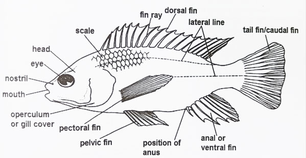

Miscellaneous 2026- Question 1
Draw a large and well labelled diagram of a named bony fish.

Diagram of a Tilapia
State the functions of the parts labelled.
-
Mouth: Used for ingestion of food and also allows water into to the gills for gaseous exchange.
-
Eyes: Used for vision, enabling the fish to locate food, mate and also escape from predators.
-
Nostrils: Used for smelling
-
Operculum: Covers and protects the gills ; open to allow water to exit the gill chambers
-
Lateral line: Detects vibrations and pressure changes in water.
-
Dorsal and ventral fins: Stabilize the fish during swimming; control rolling and yawning movements.
-
Pelvic and pectoral fins: Act as brakes, control steering, balancing and pitching
-
Caudal or tail fin: Propels the fish forward during swimming
-
Scales: Protects the fish from mechanical injury; it provides a smooth surface which reduces water resistance during swimming.
State the adaptations of fish to life in water.
- They have eyes for vision, enabling them to locate food as well as predators
- They have gills for gaseous exchange in water
- They have scales and mucus to prevent mechanical injury and reduce friction during swimming
- They have lateral line to detect vibrations and pressure changes in water, enabling the fish to locate prey or incoming predator
- They have pelvic and pectoral fins to steer the fish, acts as brakes and control pitching
- They have caudal or tail fin to propel the fish forward during swimming
- They have a streamlined body to reduce water resistance during swimming.
- They have powerful trunk muscles to generate force which propels the fish during swimming
- Some have a swim bladder to provide buoyancy. This saves energy by avoiding the need to keep swimming in order to stay at the same depth.
Explain why a fish would suffocate on land even though there is more oxygen on land than in water.
- On land, the gills collapse and the gill filaments stick together, reducing the surface area available for gaseous exchange, leading to suffocation.
- Gills can only extract oxygen from water, but not from air.
Describe the mechanism of breathing and gaseous exchange in fish
- The fish opens its mouth.
- Muscular contractions lower the floor of the mouth.
- Volume of the mouth cavity increases, and water pressure inside decreases.
- Water flows into the mouth.
- Muscles in operculum cause it to bulge outward, increasing the volume of the gill chamber, while pressure inside the gill chamber decreases.
- Water flows from the mouth to the gill chamber and over the gill filaments.
- The fish now closes its mouth, and floor of the buccal cavity is raised.
- Volume of the buccal cavity decreases, increasing the pressure inside.
- The internal water pressure now exceeds the external pressure, forcing the operculum to open and water to flow out.
- As water flows over the gill filaments, oxygen diffuses into the blood and carbon dioxide diffuses out of blood into the water.
How is fish important to man?
- Fish are a source of protein and vitamins in the human diet.
- Fish provide occupation and income for many communities. e.g. fishing and aquaculture (fish farming).
- Fish are important for recreational activities e.g. sport fishing and diving.
- Fish are used in scientific research and education.
- Some fish are used in biological control of pests e.g. catfish for controlling snail populations.
- Fish are used in the production of fertilizers